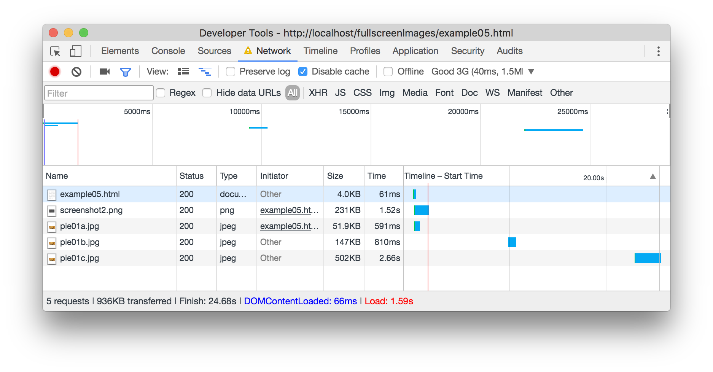

On this example, you will need photoshop or some sort of editor to create some smaller background images. In photoshop, open the pie01.jpg resize it down to about 300px wide and export it again, at about 80% quality. Save it as pie01a.jpg. This will load by default if you are on mobile.
You will notice that if you make your browser bigger, around 600px wide, the background image starts to look really bad.
Resize the image in photoshop to 600px wide and save it as pie01b.jpg. Then do the same thing again at 1300px wide, saving it as pie01c.jpg
The Chrome developer tools (inspector) can help us see how this works on a network. We need to run it from a server though for this to work. I am just going to use MAMP. I can throttle the loading of the page to look like it would look if I were on a 3G network (which is pretty slow by today's standards.
If I start with my browser small, like mobile, you will see the small image load, and you can see how long it takes. If I then make my browser wider, without even reloading, when it gets to 600px wide, the larger background image comes in. Then again at 1300 pixels and if you have a large enough monitor, you can see the monster sized image come in at 2000px. This means you are only loading the size image you need, and not wasting bandwidth downloading masive images.
Note: This works for background images in CSS, images that are in your content, like the image of the graph below are a different story. For that, you may need to explore the picture tag.

I hope these examples help.